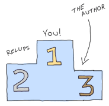

Leveling Up in The Process Quest
The Hiccups of Appups and Relups
Doing some code hot-loading is one of the simplest things in Erlang. You recompile, make a fully-qualified function call, and then enjoy. Doing it right and safe is much more difficult, though.
There is one very simple challenge that makes code reloading problematic. Let's use our amazing Erlang-programming brain and have it imagine a gen_server process. This process has a handle_cast/2 function that accepts one kind of argument. I update it to one that takes a different kind of argument, compile it, push it in production. All is fine and dandy, but because we have an application that we don't want to shut down, we decide to load it on the production VM to make it run.
Then a bunch of error reports start pouring in. It turns out that your different handle_cast functions are incompatible. So when they were called a second time, no clause matched. The customer is pissed off, so is your boss. Then the operations guy is also angry because he has to get on location and rollback the code, extinguish fires, etc. If you're lucky, you're that operations guy. You're staying late and ruining the janitor's night (he usually loves to hum along with his music and dance a little bit, but he feels ashamed in your presence). You come home late, your family/friends/WoW raid party/children are mad at you, they yell, scream, slam the door and you're left alone. You had promised that nothing could go wrong, no downtime. You're using Erlang after all, right? Oh but it didn't happen so. You're left alone, curled up in a ball in the corner of the kitchen, eating a frozen hot pocket.
Of course things aren't always that bad, but the point stands. Doing live code upgrades on a production system can be very dangerous if you're changing the interface your modules give to the world: changing internal data structures, changing function names, modifying records (remember, they're tuples!), etc. They all have the potential to crash things.
When we were first playing with code reloading, we had a process with some kind of hidden message to handle doing a fully-qualified call. If you recall, a process could have looked like this:
loop(N) ->
receive
some_standard_message -> N+1;
other_message -> N-1;
{get_count, Pid} ->
Pid ! N,
loop(N);
update -> ?MODULE:loop(N);
end.
However, this way of doing things wouldn't fix our problems if we were to change the arguments to loop/1. We'd need to extend it a bit like this:
loop(N) ->
receive
some_standard_message -> N+1;
other_message -> N-1;
{get_count, Pid} ->
Pid ! N,
loop(N);
update -> ?MODULE:code_change(N);
end.
And then code_change/1 can take care of calling a new version of loop. But this kind of trick couldn't work with generic loops. See this example:
loop(Mod, State) ->
receive
{call, From, Msg} ->
{reply, Reply, NewState} = Mod:handle_call(Msg, State),
From ! Reply,
loop(Mod, NewState);
update ->
{ok, NewState} = Mod:code_change(State),
loop(Mod, NewState)
end.
See the problem? If we want to update Mod and load a new version, there is no way to do it safely with that implementation. The call Mod:handle_call(Msg, State) is already fully qualified and it's well possible that a message of the form {call, From, Msg} is received in between the time we reload the code and handle the update message. In that case, we'd update the module in an uncontrolled manner. Then we'd crash.
The secret to getting it right is buried within the entrails of OTP. We must freeze the sands of time! To do so, we require more secret messages: messages to put a process on hold, messages to change the code, and then messages to resume the actions you had before. Deep inside OTP behaviours is hidden a special protocol to take care of all that kind of management. This is done through something called the sys module and a second one called release_handler, part of the SASL (System Architecture Support Libraries) application. They take care of everything.
The trick is that you can suspend OTP processes by calling sys:suspend(PidOrName) (you can find all of the processes using the supervision trees and looking at the children each supervisor has). Then you use sys:change_code(PidOrName, Mod, OldVsn, Extra) to force the process to update itself, and finally, you call sys:resume(PidOrName) to make things go again.
It wouldn't be very practical for us to call these functions manually by writing ad-hoc scripts all the time. Instead, we can look at how relups are done.
The 9th Circle of Erl
The act of taking a running release, making a second version of it and updating it while it runs is perilous. What seems like a simple assembly of appups (files containing instructions on how to update individual applications) and relups (file containing instructions to update an entire release) quickly turns into a struggle through APIs and undocumented assumptions.
We're getting into one of the most complex parts of OTP, difficult to comprehend and get right, on top of being time consuming. In fact, if you can avoid the whole procedure (which will be called relup from now on) and do simple rolling upgrades by restarting VMs and booting new applications, I would recommend you do so. Relups should be one of these 'do or die' tools. Something you use when you have few more choices.
There are a bunch of different levels to have when dealing with release upgrades:
- Write OTP applications
- Turn a bunch of them into a release
- Create new versions of one or more of the OTP applications
- Create an
appupfile that explains what to change to make the transition between the old and the new application work - Create a new release with the new applications
- Generate an appup file from these releases
- Install the new app in a running Erlang shell
Each of which can be more complex than the preceding one. We've only seen how to do the first 3 steps here. To be able to work with an application that is more adapted to long-running upgrades than the previous ones (eh, who cares about running regexes without restarting), we'll introduce a superb video game.
Progress Quest
Progress Quest is a revolutionary Role Playing Game. I would call it the OTP of RPGs in fact. If you've ever played an RPG before, you'll notice that many steps are similar: run around, kill enemies, gain experience, get money, level up, get skills, complete quests. Rinse and repeat forever. Power players will have shortcuts such as macros or even bots to go around and do their bidding for them.
Progress Quest took all of these generic steps and turned them into one streamlined game where all you have to do is sit back and enjoy your character doing all the work:

With the permission of the creator of this fantastic game, Eric Fredricksen, I've made a very minimal Erlang clone of it called Process Quest. Process Quest is similar in principle to Progress Quest, but rather than being a single-player application, it's a server able to hold many raw socket connections (usable through telnet) to let someone use a terminal and temporarily play the game.
The game is made of the following parts:
regis-1.0.0
The regis application is a process registry. It has an interface somewhat similar to the regular Erlang process registry, but it can accept any term at all and is meant to be dynamic. It might make things slower because all the calls will be serialized when they enter the server, but it will be better than using the regular process registry, which is not made for that kind of dynamic work. If this guide could automatically update itself with external libraries (it's too much work), I would have used gproc instead. It has a few modules, namely regis.erl, regis_server.erl and regis_sup.erl. The first one is a wrapper around the two other ones (and an application callback module), regis_server is the main registration gen_server, and regis_sup is the application's supervisor.
processquest-1.0.0
This is the core of the application. It includes all the game logic. Enemies, market, killing fields and statistics. The player itself is a gen_fsm that sends messages to itself in order to keep going all the time. It contains more modules than regis:
- pq_enemy.erl
- This module randomly picks an enemy to fight, of the form
{<<"Name">>, [{drop, {<<"DropName">>, Value}}, {experience, ExpPoints}]}. This lets the player fight an enemy. - pq_market.erl
- This implements a market that allows to find items of a given value and a given strength. All items returned are of the form
{<<"Name">>, Modifier, Strength, Value}. There are functions to fetch weapons, armors, shields and helmets. - pq_stats.erl
- This is a small attribute generator for your character.
- pq_events.erl
- A wrapper around a gen_event event manager. This acts as a generic hub to which subscribers connect themselves with their own handlers to receive events from each player. It also takes care of waiting a given delay for the player's actions to avoid the game being instantaneous.
- pq_player.erl
- The central module. This is a gen_fsm that goes through the state loop of killing, then going to the market, then killing again, etc. It uses all of the above modules to function.
- pq_sup.erl
- A supervisor that sits above a pair of
pq_eventandpq_playerprocesses. They both need to be together in order to work, otherwise the player process is useless and isolated or the event manager will never get any events. - pq_supersup.erl
- The top-level supervisor of the application. It sits over a bunch of
pq_supprocesses. This lets you spawn as many players as you'd like. - processquest.erl
- A wrapper and application callback module. It gives the basic interface to a player: you start one, then subscribe to events.
sockserv-1.0.0

A customized raw socket server, made to work only with the processquest app. It will spawn gen_servers each in charge of a TCP socket that will push strings to some client. Again, you may use telnet to work with it. Telnet was technically not made for raw socket connections and is its own protocol, but most modern clients accept it without a problem. Here are its modules:
- sockserv_trans.erl
- This translates messages received from the player's event manager into printable strings.
- sockserv_pq_events.erl
- A simple event handler that takes whatever events come from a player and casts them to the socket gen_server.
- sockserv_serv.erl
- A gen_server in charge of accepting a connection, communicating with a client and forwarding information to it.
- sockserv_sup.erl
- Supervises a bunch of socket servers.
- sockserv.erl
- Application callback module for the app as a whole.
The release
I've set everything up in a directory called processquest with the following structure:
apps/ - processquest-1.0.0 - ebin/ - src/ - ... - regis-1.0.0 - ... - sockserv-1.0.0 - ... rel/ (will hold releases) processquest-1.0.0.config
Based on that, we can build a release.
Note: if you go look into processquest-1.0.0.config, you will see that applications such as crypto and sasl are included. Crypto is necessary to have good initialisation of pseudo-random number generators and SASL is mandatory to be able to do appups on a system. If you forget to include SASL in your release, it will be impossible to upgrade the system
A new filter has appeared in the config file: {excl_archive_filters, [".*"]}. This filter makes sure that no .ez file is generated, only regular files and directories. This is necessary because the tools we're going to use can not look into .ez files to find the items they need.
You will also see that there are no instructions asking to strip the debug_info. Without debug_info, doing an appup will fail for some reason.
Following last chapter's instructions, we start by calling erl -make for all applications. Once this is done, start an Erlang shell from the processquest directory and type in the following:
1> {ok, Conf} = file:consult("processquest-1.0.0.config"), {ok, Spec} = reltool:get_target_spec(Conf), reltool:eval_target_spec(Spec, code:root_dir(), "rel").
ok
We should have a functional release. Let's try it. Start any version of the VM by doing ./rel/bin/erl -sockserv port 8888 (or any other port number you want. Default is 8082). This will show a lot of logs about processes being started (that's one of the functions of SASL), and then a regular Erlang shell. Start a telnet session on your localhost using whatever client you want:
$ telnet localhost 8888 Trying 127.0.0.1... Connected to localhost. Escape character is '^]'. What's your character's name? hakvroot Stats for your character: Charisma: 7 Constitution: 12 Dexterity: 9 Intelligence: 8 Strength: 5 Wisdom: 16 Do you agree to these? y/n
That's a bit too much wisdom and charisma for me. I type in n then <Enter>:
n Stats for your character: Charisma: 6 Constitution: 12 Dexterity: 12 Intelligence: 4 Strength: 6 Wisdom: 10 Do you agree to these? y/n
Oh yes, that's ugly, dumb and weak. Exactly what I'm looking for in a hero based on me:
y Executing a Wildcat... Obtained Pelt. Executing a Pig... Obtained Bacon. Executing a Wildcat... Obtained Pelt. Executing a Robot... Obtained Chunks of Metal. ... Executing a Ant... Obtained Ant Egg. Heading to the marketplace to sell loot... Selling Ant Egg Got 1 bucks. Selling Goblin hair Got 1 bucks. ... Negotiating purchase of better equipment... Bought a plastic knife Heading to the killing fields... Executing a Pig... Obtained Bacon. Executing a Ant...
OK, that's enough for me. Type in quit then <Enter> to close the connection:
quit Connection closed by foreign host.
If you want, you can leave it open, see yourself level up, gain stats, etc. The game basically works, and you can try with many clients. It should keep going without a problem.
Awesome right? Well...
Making Process Quest Better
There are a few issues with the current versions of the applications of Process Quest. First of all, we have very little variety in terms of enemies to beat. Second, we have text that looks a bit weird (what is it with Executing a Ant...). A third issue is that the game is a bit too simple; let's add a mode for quests! Another one is that the value of items is directly bound to your level in the real game, while our version doesn't do it. Last of all, and you couldn't see this unless you read the code and tried to close the client on your own end, a client closing their connection will leave the player process alive on the server. Uh oh, memory leaks!
I'll have to fix this! First, I started by making a new copy of both applications that need fixes. I now have processquest-1.1.0 and sockserv-1.0.1 on top of the others (I use the version scheme of MajorVersion.Enhancements.BugFixes). Then I implemented all the changes I needed. I won't go through all of them, because the details are too many for the purpose of this chapter — we're here to upgrade an app, not to know all its little details and intricacies. In the case you do want to know all the little intricacies, I made sure to comment all of the code in a decent way so that you might be able to find the information you need to understand it. First, the changes to processquest-1.1.0. All in all, changes were brought to pq_enemy.erl, pq_events.erl, pq_player.erl and I added a file named pq_quest.erl, that implements quests based on how many enemies were killed by a player. Of these files, only pq_player.erl had changes incompatible that will require a time suspension. The change I brought was to change the record:
-record(state, {name, stats, exp=0, lvlexp=1000, lvl=1,
equip=[], money=0, loot=[], bought=[], time=0}).
To this one:
-record(state, {name, stats, exp=0, lvlexp=1000, lvl=1,
equip=[], money=0, loot=[], bought=[],
time=0, quest}).
Where the quest field will hold a value given by pq_quest:fetch/0. Because of that change, I'll need to modify the code_change/4 function in the version 1.1.0. In fact I'll need to modify it twice: once in the case of an upgrade (moving from 1.0.0 to 1.1.0), and another time in the case of a downgrade (1.1.0 to 1.0.0). Fortunately, OTP will pass us different arguments in each case. When we upgrade, we get a version number for the module. We don't exactly care for that one at this point and we'll likely just ignore it. When we downgrade, we get {down, Version}. This lets us easily match on each operation:
code_change({down, _}, StateName, State, _Extra) ->
...;
code_change(_OldVsn, StateName, State, _Extra) ->
....
But hold on a second right there! We can't just blindly take the state as we usually do. We need to upgrade it. The problem is, we can't do something like:
code_change(_OldVsn, StateName, S = #state{}, _Extra) ->
....
We have two options. The first one is to declare a new state record that will have a new form. We'd end up having something like:
-record(state, {...}).
-record(new_state, {...}).
And then we'd have to change the record in each of the function clauses of the module. That's annoying and not worth the risk. It will be simpler, instead, to expand the record to its underlying tuple form (remember A Short Visit to Common Data Structures):
code_change({down, _},
StateName,
#state{name=N, stats=S, exp=E, lvlexp=LE, lvl=L, equip=Eq,
money=M, loot=Lo, bought=B, time=T},
_Extra) ->
Old = {state, N, S, E, LE, L, Eq, M, Lo, B, T},
{ok, StateName, Old};
code_change(_OldVsn,
StateName,
{state, Name, Stats, Exp, LvlExp, Lvl, Equip, Money, Loot,
Bought, Time},
_Extra) ->
State = #state{
name=Name, stats=Stats, exp=Exp, lvlexp=LvlExp, lvl=Lvl, equip=Equip,
money=Money, loot=Loot, bought=Bought, time=Time, quest=pq_quest:fetch()
},
{ok, StateName, State}.
And there's our code_change/4 function! All it does is convert between both tuple forms. For new versions, we also take care of adding a new quest — it would be boring to add quests but have all our existing players unable to use them. You'll notice that we still ignore the _Extra variable. This one is passed from the appup file (to be described soon), and you'll be the one to pick its value. For now, we don't care because we can only upgrade and downgrade to and from one release. In some more complex cases, you might want to pass release-specific information in there.
For the sockserv-1.0.1 application, only sockserv_serv.erl required changes. Fortunately, they didn't need a restart, only a new message to match on.
The two versions of the two applications have been fixed. That's not enough to go on our merry way though. We have to find a way to let OTP know what kind of changes require different kinds of actions.
Appup Files
Appup files are lists of Erlang commands that need to be done to upgrade a given application. They contain lists of tuples and atoms telling what to do and in what case. The general format for them is:
{NewVersion,
[{VersionUpgradingFrom, [Instructions]}]
[{VersionDownGradingTo, [Instructions]}]}.
They ask for lists of versions because it's possible to upgrade and downgrade to many different versions. In our case, for processquest-1.1.0, this would be:
{"1.1.0",
[{"1.0.0", [Instructions]}],
[{"1.0.0", [Instructions]}]}.
The instructions contain both high-level and low-level commands. We usually only need to care about high-level ones, though.
- {add_module, Mod}
- The module Mod is loaded for the first time.
- {load_module, Mod}
- The module Mod is already loaded in the VM and has been modified.
- {delete_module, Mod}
- The module Mod is removed from the VM.
- {update, Mod, {advanced, Extra}}
- This will suspend all processes running Mod, call the
code_changefunction of your module with Extra as the last argument, then resume all processes running Mod. Extra can be used to pass in arbitrary data to thecode_changefunction, in case it's required for upgrades. - {update, Mod, supervisor}
- Calling this lets you re-define the
initfunction of a supervisor to influence its restart strategy (one_for_one,rest_for_one, etc.) or change child specifications (this will not affect existing processes). - {apply, {M, F, A}}
- Will call
apply(M,F,A). - Module dependencies
- You can use
{load_module, Mod, [ModDependencies]}or{update, Mod, {advanced, Extra}, [ModDeps]}to make sure that a command happens only after some other modules were handled beforehand. This is especially useful if Mod and its dependencies are not part of the same application. There is sadly no way to give similar dependencies todelete_moduleinstructions. - Adding or removing an application
- When generating relups, we won't need any special instructions to remove or add applications. The function that generates
relupfiles (files to upgrade releases) will take care of detecting this for us.
Using these instructions, we can write the two following appup files for our applications. The file must be named NameOfYourApp.appup and be put in the app's ebin/ directory. Here's processquest-1.1.0's appup file:
{"1.1.0",
[{"1.0.0", [{add_module, pq_quest},
{load_module, pq_enemy},
{load_module, pq_events},
{update, pq_player, {advanced, []}, [pq_quest, pq_events]}]}],
[{"1.0.0", [{update, pq_player, {advanced, []}},
{delete_module, pq_quest},
{load_module, pq_enemy},
{load_module, pq_events}]}]}.
You can see that we need to add the new module, load the two ones that require no suspension, and then update pq_player in a safe manner. When we downgrade the code, we do the exact same thing, but in reverse. The funny thing is that in one case, {load_module, Mod} will load a new version, and in the other, it will load the old version. It all depends on the context between an upgrade and a downgrade.
Because sockserv-1.0.1 had only one module to change and that it required no suspension, its appup file is only:
{"1.0.1",
[{"1.0.0", [{load_module, sockserv_serv}]}],
[{"1.0.0", [{load_module, sockserv_serv}]}]}.
Woo! The next step is to build a new release using the new modules. Here's the file processquest-1.1.0.config:
{sys, [
{lib_dirs, ["/Users/ferd/code/learn-you-some-erlang/processquest/apps"]},
{erts, [{mod_cond, derived},
{app_file, strip}]},
{rel, "processquest", "1.1.0",
[kernel, stdlib, sasl, crypto, regis, processquest, sockserv]},
{boot_rel, "processquest"},
{relocatable, true},
{profile, embedded},
{app_file, strip},
{incl_cond, exclude},
{excl_app_filters, ["_tests.beam"]},
{excl_archive_filters, [".*"]},
{app, stdlib, [{incl_cond, include}]},
{app, kernel, [{incl_cond, include}]},
{app, sasl, [{incl_cond, include}]},
{app, crypto, [{incl_cond, include}]},
{app, regis, [{vsn, "1.0.0"}, {incl_cond, include}]},
{app, sockserv, [{vsn, "1.0.1"}, {incl_cond, include}]},
{app, processquest, [{vsn, "1.1.0"}, {incl_cond, include}]}
]}.
It's a copy/paste of the old one with a few versions changed. First, compile both new applications with erl -make. If you have downloaded the zip file earlier, they were already there for you. Then we can generate a new release. First, compile the two new applications, and then type in the following:
$ erl -env ERL_LIBS apps/
1> {ok, Conf} = file:consult("processquest-1.1.0.config"), {ok, Spec} = reltool:get_target_spec(Conf), reltool:eval_target_spec(Spec, code:root_dir(), "rel").
ok
Don't Drink Too Much Kool-Aid:
Why didn't we just use systools? Well systools has its share of issues. First of all, it will generate appup files that sometimes have weird versions in them and won't work perfectly. It will also assume a directory structure that is barely documented, but somewhat close to what reltool uses. The biggest issue, though, is that it will use your default Erlang install as the root directory, which might create all kinds of permission issues and whatnot when the time comes to unpack stuff.
There's just no easy way with either tools and we'll require a lot of manual work for that. We thus make a chain of commands that uses both modules in a rather complex manner, because it ends up being a little bit less work.
But wait, there's more manual work required!
- copy
rel/releases/1.1.0/processquest.relasrel/releases/1.1.0/processquest-1.1.0.rel. - copy
rel/releases/1.1.0/processquest.bootasrel/releases/1.1.0/processquest-1.1.0.boot. - copy
rel/releases/1.1.0/processquest.bootasrel/releases/1.1.0/start.boot. - copy
rel/releases/1.0.0/processquest.relasrel/releases/1.0.0/processquest-1.0.0.rel. - copy
rel/releases/1.0.0/processquest.bootasrel/releases/1.0.0/processquest-1.0.0.boot. - copy
rel/releases/1.0.0/processquest.bootasrel/releases/1.0.0/start.boot.
Now we can generate the relup file. To do this, start an Erlang shell and call the following:
$ erl -env ERL_LIBS apps/ -pa apps/processquest-1.0.0/ebin/ -pa apps/sockserv-1.0.0/ebin/
1> systools:make_relup("./rel/releases/1.1.0/processquest-1.1.0", ["rel/releases/1.0.0/processquest-1.0.0"], ["rel/releases/1.0.0/processquest-1.0.0"]).
ok
Because the ERL_LIBS env variable will only look for the newest versions of applications, we also need to add the -pa <Path to older applications> in there so that systools' relup generator will be able to find everything. Once this is done, move the relup file to rel/releases/1.1.0/. That directory will be looked into when updating the code in order to find the right stuff in there. One problem we'll have, though, is that the release handler module will depend on a bunch of files it assumes to be present, but won't necessarily be there.

Upgrading the Release
Sweet, we've got a relup file. There's still stuff to do before being able to use it though. The next step is to generate a tar file for the whole new version of the release:
2> systools:make_tar("rel/releases/1.1.0/processquest-1.1.0").
ok
The file will be in rel/releases/1.1.0/. We now need to manually move it to rel/releases, and rename it to add the version number when doing so. More hard-coded junk! $ mv rel/releases/1.1.0/processquest-1.1.0.tar.gz rel/releases/ is our way out of this.
Now this is a step you want to do at any time before you start the real production application. This is a step that needs to be done before you start the application as it will allow you to rollback to the initial version after a relup. If you do not do this, you will be able to downgrade production applications only to releases newer than the first one, but not the first one!
Open a shell and run this:
1> release_handler:create_RELEASES("rel", "rel/releases", "rel/releases/1.0.0/processquest-1.0.0.rel", [{kernel,"2.14.4", "rel/lib"}, {stdlib,"1.17.4","rel/lib"}, {crypto,"2.0.3","rel/lib"},{regis,"1.0.0", "rel/lib"}, {processquest,"1.0.0","rel/lib"},{sockserv,"1.0.0", "rel/lib"}, {sasl,"2.1.9.4", "rel/lib"}]).
The general format of the function is release_handler:create_RELEASES(RootDir, ReleasesDir, Relfile, [{AppName, Vsn, LibDir}]). This will create a file named RELEASES inside the rel/releases directory (or any other ReleasesDir) that will contain basic information on your releases when relup is looking for files and modules to reload.
We can now start running the old version of the code. If you start rel/bin/erl, it will start the 1.1.0 release by default. That's because we built the new release before starting the VM. For this demonstration, we'll need to start the release with ./rel/bin/erl -boot rel/releases/1.0.0/processquest. You should see everything starting up. Start a telnet client to connect to our socket server so we can see the live upgrade taking place.
Whenever you feel ready for an upgrade, go to the Erlang shell currently running ProcessQuest, and call the following function:
1> release_handler:unpack_release("processquest-1.1.0").
{ok,"1.1.0"}
2> release_handler:which_releases().
[{"processquest","1.1.0",
["kernel-2.14.4","stdlib-1.17.4","crypto-2.0.3",
"regis-1.0.0","processquest-1.1.0","sockserv-1.0.1",
"sasl-2.1.9.4"],
unpacked},
{"processquest","1.0.0",
["kernel-2.14.4","stdlib-1.17.4","crypto-2.0.3",
"regis-1.0.0","processquest-1.0.0","sockserv-1.0.0",
"sasl-2.1.9.4"],
permanent}]
The second prompt here tells you that the release is ready to be upgraded, but not installed nor made permanent yet. To install it, do:
3> release_handler:install_release("1.1.0").
{ok,"1.0.0",[]}
4> release_handler:which_releases().
[{"processquest","1.1.0",
["kernel-2.14.4","stdlib-1.17.4","crypto-2.0.3",
"regis-1.0.0","processquest-1.1.0","sockserv-1.0.1",
"sasl-2.1.9.4"],
current},
{"processquest","1.0.0",
["kernel-2.14.4","stdlib-1.17.4","crypto-2.0.3",
"regis-1.0.0","processquest-1.0.0","sockserv-1.0.0",
"sasl-2.1.9.4"],
permanent}]
So now, the release 1.1.0 should be running, but it's still not there forever. Still, you could keep your application just running that way. Call the following function to make things permanent:
5> release_handler:make_permanent("1.1.0").
ok.
Ah damn. A bunch of our processes are dying now (error output removed from the sample above). Except that if you look at our telnet client, it did seem to upgrade fine. The issue is that all the gen_servers that were waiting for connections in sockserv could not listen to messages because accepting a TCP connection is a blocking operation. Thus, the servers couldn't upgrade when new versions of the code were loaded and were killed by the VM. See how we can confirm this:
6> supervisor:which_children(sockserv_sup).
[{undefined,<0.51.0>,worker,[sockserv_serv]}]
7> [sockserv_sup:start_socket() || _ <- lists:seq(1,20)].
[{ok,<0.99.0>},
{ok,<0.100.0>},
...
{ok,<0.117.0>},
{ok,<0.118.0>}]
8> supervisor:which_children(sockserv_sup).
[{undefined,<0.112.0>,worker,[sockserv_serv]},
{undefined,<0.113.0>,worker,[sockserv_serv]},
...
{undefined,<0.109.0>,worker,[sockserv_serv]},
{undefined,<0.110.0>,worker,[sockserv_serv]},
{undefined,<0.111.0>,worker,[sockserv_serv]}]
The first command shows that all children that were waiting for connections have already died. The processes left will be those with an active session going on. This shows the importance of keeping code responsive. Had our processes been able to receive messages and act on them, things would have been fine.

In the two last commands, I just start more workers to fix the problem. While this works, it requires manual action from the person running the upgrade. In any case, this is far from optimal. A better way to solve the problem would be to change the way our application works in order to have a monitor process watching how many children sockserv_sup has. When the number of children falls under a given threshold, the monitor starts more of them. Another strategy would be to change the code so accepting connections is done by blocking on intervals of a few seconds at a time, and keep retrying after pauses where messages can be received. This would give the gen_servers the time to upgrade themselves as required, assuming you'd wait the right delay between the installation of a release and making it permanent. Implementing either or both of these solutions is left as an exercise to the reader because I am somewhat lazy. These kinds of crashes are the reason why you want to test your code before doing these updates on a live system.
In any case, we've solved the problem for now and we might want to check how the upgrade procedure went:
9> release_handler:which_releases().
[{"processquest","1.1.0",
["kernel-2.14.4","stdlib-1.17.4","crypto-2.0.3",
"regis-1.0.0","processquest-1.1.0","sockserv-1.0.1",
"sasl-2.1.9.4"],
permanent},
{"processquest","1.0.0",
["kernel-2.14.4","stdlib-1.17.4","crypto-2.0.3",
"regis-1.0.0","processquest-1.0.0","sockserv-1.0.0",
"sasl-2.1.9.4"],
old}]
That's worth a fist pump. You can try downgrading an installation by doing release_handler:install(OldVersion).. This should work fine, although it could risk killing more processes that never updated themselves.
Don't Drink Too Much Kool-Aid:
If for some reason, rolling back always fails when trying to roll back to the first version of the release using the techniques shown in this chapter, you have probably forgotten to create the RELEASES file. You can know this if you see an empty list in {YourRelease,Version,[],Status} when calling release_handler:which_releases(). This is a list of where to find modules to load and reload, and it is first built when booting the VM and reading the RELEASES file, or when unpacking a new release.
Ok, so here's a list of all the actions that must be taken to have functional relups:
- Write OTP applications for your first software iteration
- Compile them
- Build a release (1.0.0) using Reltool. It must have debug info and no
.ezarchive. - Make sure you create the RELEASES file at some point before starting your production application. You can do it with
release_handler:create_RELEASES(RootDir, ReleasesDir, Relfile, [{AppName, Vsn, LibDir}]). - Run the release!
- Find bugs in it
- Fix bugs in new versions of applications
- Write
appupfiles for each of the applications - Compile the new applications
- Build a new release (1.1.0 in our case). It must have debug info and no
.ezarchive - Copy
rel/releases/NewVsn/RelName.relasrel/releases/NewVsn/RelName-NewVsn.rel - Copy
rel/releases/NewVsn/RelName.bootasrel/releases/NewVsn/RelName-NewVsn.boot - Copy
rel/releases/NewVsn/RelName.bootasrel/releases/NewVsn/start.boot - Copy
rel/releases/OldVsn/RelName.relasrel/releases/OldVsn/RelName-OldVsn.rel - Copy
rel/releases/OldVsn/RelName.bootasrel/releases/OldVsn/RelName-OldVsn.boot - Copy
rel/releases/OldVsn/RelName.bootasrel/releases/OldVsn/start.boot - Generate a relup file with
systools:make_relup("rel/releases/Vsn/RelName-Vsn", ["rel/releases/OldVsn/RelName-OldVsn"], ["rel/releases/DownVsn/RelName-DownVsn"]). - Move the relup file to
rel/releases/Vsn - Generate a tar file of the new release with
systools:make_tar("rel/releases/Vsn/RelName-Vsn"). - Move the tar file to
rel/releases/ - Have some shell opened that still runs the first version of the release
- Call
release_handler:unpack_release("NameOfRel-Vsn"). - Call
release_handler:install_release(Vsn). - Call
release_handler:make_permanent(Vsn). - Make sure things went fine. If not, rollback by installing an older version.
You might want to write a few scripts to automate this.
Again, relups are a very messy part of OTP, a part that is hard to grasp. You will likely find yourself finding plenty of new errors, which are all more impossible to understand than the previous ones. Some assumptions are made about how you're going to run things, and choosing different tools when creating releases will change how things should be done. You might be tempted to write your own update code using the sys module's functions even! Or maybe use tools like rebar which will automate some of the painful steps. In any case, this chapter and its examples have been written to the best knowledge of the author, a person who sometimes enjoys writing about himself in third person.
If it is possible to upgrade your application in ways that do not require relups, I would recommend doing so. It is said that divisions of Ericsson that do use relups spend as much time testing them as they do testing their applications themselves. They are a tool to be used when working with products that can imperatively never be shut down. You will know when you will need them, mostly because you'll be ready to go through the hassle of using them (got to love that circular logic!) When the need arises, relups are entirely useful.
How about we go learn about some friendlier features of Erlang, now?